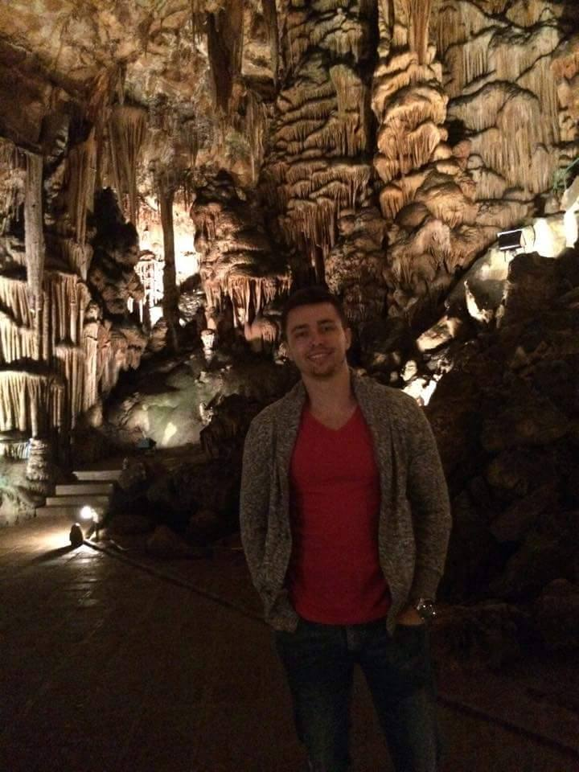

Малко информация за мен
Здравейте,
Казвам се Нихат, на 23 години, от Кърджали, в момента живея в София. Уча Компютърно и софтуерно инженерство в ТУ София. Обожавам
да пътувам. Обичам места, където мога да бъда близо до природа, както и където има много история.Обичам да
спортувам, защото спортът е моята страст. Записах тренировъчният лагер IТ Тalents, защото това е една огромна
възможност за мен за да се развивам професионално.